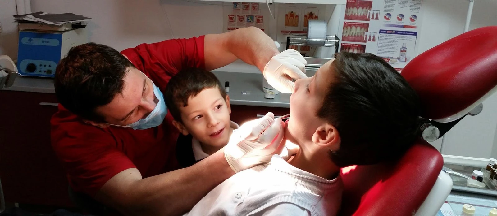
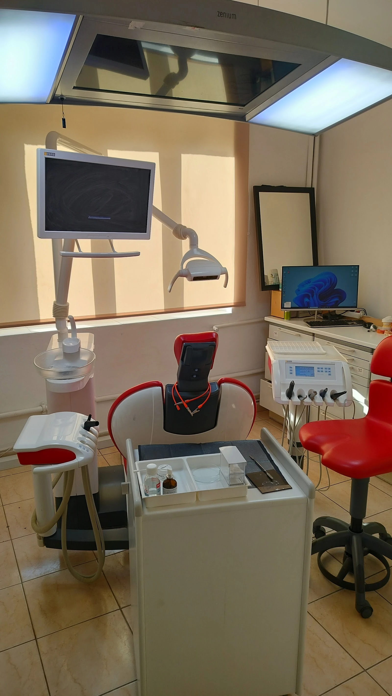
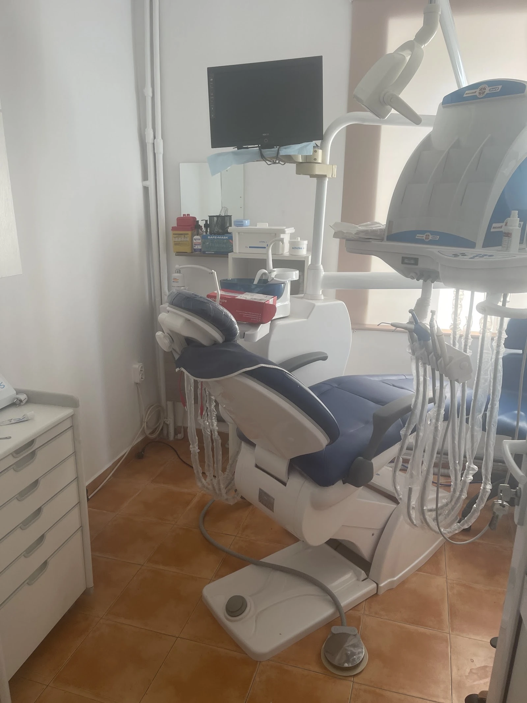

{{Cabinet stomatologic · Iași|Dental practice · Iași|Consultório dentário · Iași}}
CMI Ichim Lucian
{{Stomatolog pe Bulevardul Tudor Vladimirescu. Pacienții scriu despre profesionalism și despre un doctor care se adaptează situației lor.|A dentist on Bulevardul Tudor Vladimirescu. Patients write about professionalism and a doctor who adapts to their situation.|Dentista no Bulevardul Tudor Vladimirescu. Os pacientes escrevem sobre profissionalismo e um médico que se adapta à sua situação.}}

{{Motive de programare|Reasons to book|Motivos de marcação}}
{{Cu ce poți veni|What you can come for|Com o que pode vir}}
{{Nu trebuie să știi exact ce ai nevoie. Alege cel mai apropiat motiv, restul se lămurește cu medicul.|You don’t need to know exactly what you need. Pick the closest reason; the rest is settled with the doctor.|Não precisa de saber exatamente do que precisa. Escolha o motivo mais próximo; o resto esclarece-se com o médico.}}
{{Consultație|Consultation|Consulta}}
{{Spui ce te deranjează și stabiliți împreună ce urmează.|You say what bothers you and you decide together what comes next.|Diz o que o incomoda e decidem juntos o que se segue.}}
{{Control|Check-up|Revisão}}
{{O vizită de verificare, la intervalul pe care ți-l recomandă medicul.|A check-up visit, at the interval your doctor recommends.|Uma visita de revisão, no intervalo que o médico lhe recomendar.}}
{{Durere sau urgență|Pain or urgency|Dor ou urgência}}
{{Spune la telefon ce se întâmplă, ca să știi cum te poți programa cât mai repede.|Tell us by phone what is going on, so you know how soon you can be seen.|Diga por telefone o que se passa, para saber com que brevidade pode ser atendido.}}
{{Programare pentru copil|Appointment for a child|Marcação para criança}}
{{Menționează vârsta copilului când te programezi.|Mention the child’s age when you book.|Indique a idade da criança ao marcar.}}
{{Altceva|Something else|Outro assunto}}
{{Nu știi cum să încadrezi? Sună și descrii pe scurt.|Not sure how to describe it? Call and explain briefly.|Não sabe como descrever? Ligue e explique em poucas palavras.}}
{{de confirmat|to be confirmed|a confirmar}}{{Lista exactă de servicii a cabinetului se confirmă la telefon.|The practice’s exact list of services is confirmed by phone.|A lista exata de serviços do consultório confirma-se por telefone.}}
{{Cabinetul|The practice|O consultório}}
{{Așa arată sala de tratament|This is the treatment room|Assim é a sala de tratamento}}


{{Programare|Booking|Marcação}}
{{Completează rețeta, noi o primim pe WhatsApp|Fill in the slip, we receive it on WhatsApp|Preencha a receita, recebemo-la no WhatsApp}}
{{Alegi motivul și ziua; cabinetul revine cu intervalul disponibil. Nu confirmăm ore aici.|Pick the reason and the day; the practice replies with an available slot. Times are not confirmed on this page.|Escolhe o motivo e o dia; o consultório responde com um horário disponível. As horas não são confirmadas nesta página.}}
Bd. Tudor Vladimirescu 101 · 0744 399 207
{{Pentru urgențe medicale vitale, sună la 112.|For life-threatening emergencies, call 112.|Em emergências médicas, ligue 112.}}
{{Pacienții|Patients|Os pacientes}}
{{Ce scriu pe Google|What they write on Google|O que escrevem no Google}}
{{Aveam o problemă cu o măsea de mai multă vreme. Îmi era teamă să merg la un cabinet…|I had a problem with a molar for quite a while. I was afraid to go to a practice…|Tinha um problema com um molar há bastante tempo. Tinha medo de ir a um consultório…}}
{{Servicii extraordinare, domnul doctor este super de treabă.|Extraordinary service, the doctor is super nice.|Serviço extraordinário, o senhor doutor é muito simpático.}}
{{Domnul doctor a dat dovadă de profesionalism și s-a adaptat situației mele. Vă mulțumesc!|The doctor showed professionalism and adapted to my situation. Thank you!|O senhor doutor mostrou profissionalismo e adaptou-se à minha situação. Obrigado!}}
{{Nota 4,6 din 101 recenzii pe Google Maps.|Rated 4.6 from 101 reviews on Google Maps.|Nota 4,6 em 101 avaliações no Google Maps.}}
{{Contact|Contact|Contactos}}
{{Cum ajungi la cabinet|How to find the practice|Como chegar ao consultório}}
- {{Adresa|Address|Morada}}
- Bulevardul Tudor Vladimirescu 101
700312 Iași - {{Telefon|Phone|Telefone}}
- 0744 399 207
- {{Program|Hours|Horário}}
- {{de confirmat|to be confirmed|a confirmar}}